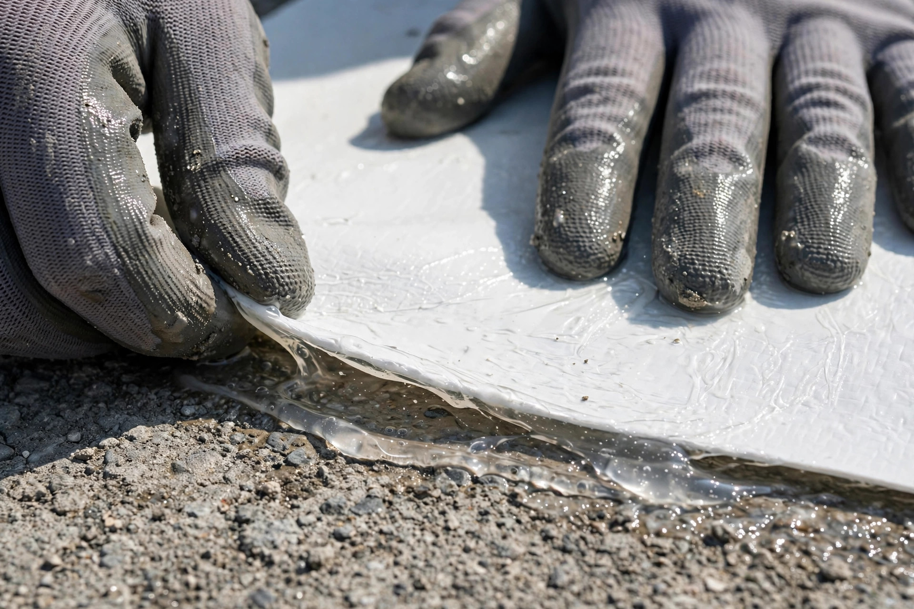
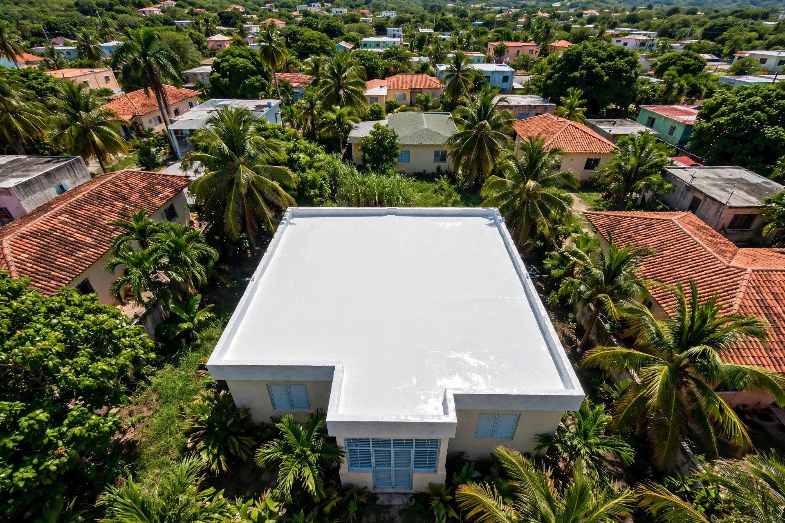

Sistema elastomérico - No es pintura, es una piel flexible
Un recubrimiento elastomérico flexible que se adhiere al techo y se mueve con los cambios de temperatura sin agrietarse: el sellado se mantiene intacto.
Resultados reales
El sistema, en acción: trabajos reales con Ultraflex. Toca cualquier foto para verla grande.


Desliza para ver todos los trabajos
El sistema
Cuatro propiedades que hacen del Ultraflex un sistema distinto, más lo que necesites.
El recubrimiento se mueve con los cambios de temperatura sin agrietarse.
SistemaCapa continua que bloquea la entrada de agua en toda la superficie.
ImpermeableEl acabado claro refleja los rayos del sol y baja el calor dentro de la casa.
AhorroPreparamos la superficie para una adherencia total del sistema.
BaseSistema Ultraflex para casas: techos de concreto sellados de verdad.
ResidencialSistema para techos comerciales de mayor escala.
ComercialCuidado del sistema para que siga flexible año tras año.
CuidadoDudas del sistema, resueltas
Por WhatsApp al 787-944-5946: envíanos fotos de tu techo.
Primero reparamos los puntos por donde entra el agua.
Limpiamos y preparamos la superficie para adherencia total.
Aplicamos el sistema elastomérico completo con garantía por escrito.
Quienes somos
Techos Ultraflex trabaja un sistema de sellado distinto: un recubrimiento elastomérico flexible que se mueve con el techo en vez de pelear contra él.
Ideal para techos de concreto, el más común en Puerto Rico. Además, el acabado claro refleja el sol y reduce la temperatura interior.
Preguntas frecuentes
Un recubrimiento elastomérico flexible que se adhiere al techo y se mueve con los cambios de temperatura sin agrietarse, manteniendo el sellado intacto.
Sí, es ideal para techos de concreto, el más común en Puerto Rico. Preparamos la superficie para una adherencia total.
Sí. Primero reparamos los puntos por donde entra el agua y luego aplicamos el sistema ultraflex completo sobre todo el techo.
Sí. El acabado claro refleja los rayos del sol y reduce la temperatura interior, lo que se nota en el consumo eléctrico.
La mayoría de los techos residenciales quedan listos en pocos días, según el tamaño y la preparación necesaria.
Sí. Todo trabajo se entrega con garantía por escrito y te explicamos el cuidado básico para mantener el sistema.
Agenda tu visita
Llena esto y te abrimos WhatsApp con tu mensaje listo.
Cotizacion sin compromiso: Cotiza el sistema Ultraflex por WhatsApp con fotos de tu techo.
Esta pagina la creo ManuPro. Escribenos hoy mismo y cotiza la website profesional de tu negocio.
Cotizar por WhatsApp